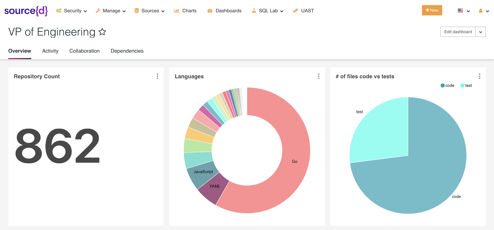
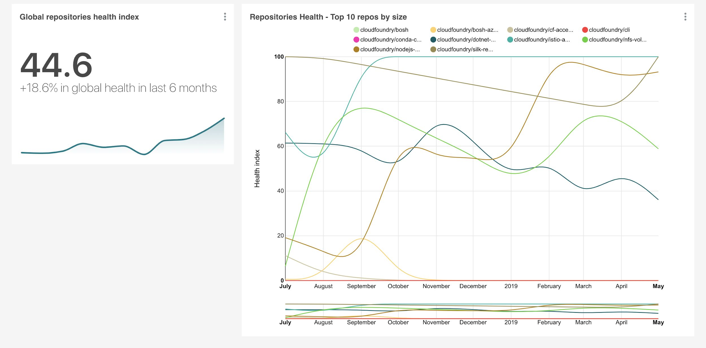
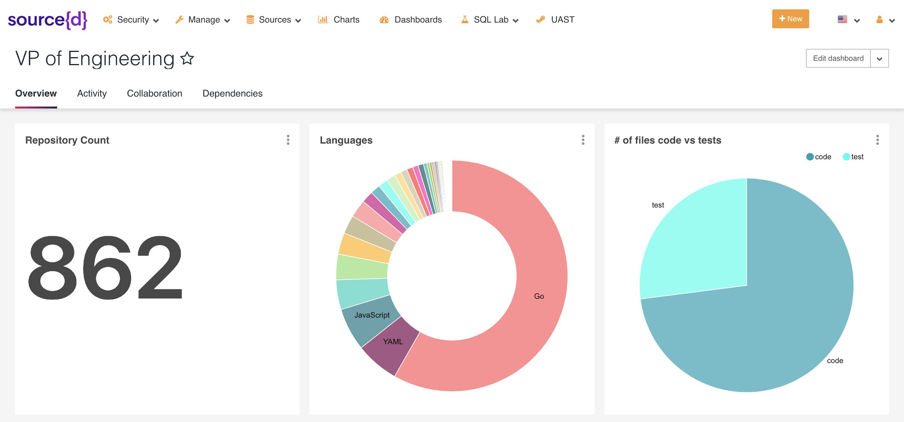
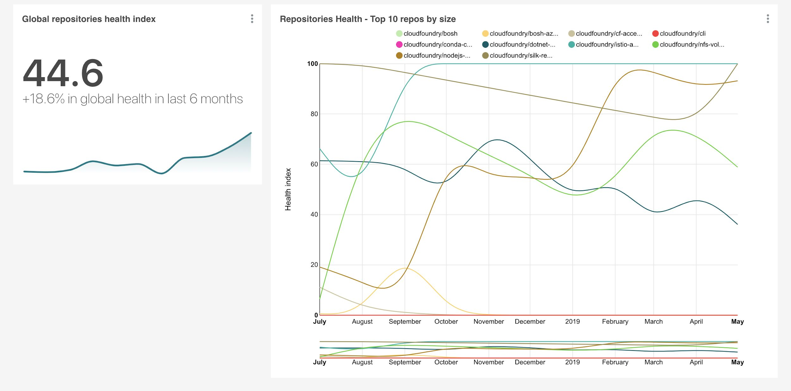

Source code

a = b * 2Vadim Markovtsev, source{d}.
Vadim Markovtsev
a = b * 2| LoC, 10⁶ | |
|---|---|
| Chrome | 20 |
| Windows 10 | 50 |
| 70 | |
| Eclipse Foundation | 160 |
| Apache Foundation | 190 |
| 2,000 | |
| GitHub |
| LoC, 10⁶ | |
|---|---|
| Chrome | 20 |
| Windows 10 | 50 |
| 70 | |
| Eclipse Foundation | 160 |
| Apache Foundation | 190 |
| 2,000 | |
| GitHub | >56,000 |
SELECT refs.repository_id
FROM refs
NATURAL JOIN commits
WHERE commits.commit_author_name = 'Johnny Bravo'
AND refs.ref_name = 'HEAD';SELECT repository_id, commit_hash, file_path,
uast_extract(uast(blob_content,
language(file_path),
'//uast:Import/Path'),
"Value") AS imports
FROM commit_files NATURAL JOIN blobs
WHERE language(file_path) = 'Go'
AND array_length(imports) > 0;| Flexible | Interoperable | Fast | |
| Spark | ✔ | ❌ | ❌ |
| Gitbase | ✔ | ✔ | ❌ |
| PostgreSQL | ❌ | ✔ | üòê |
| ClickHouse | ❌ | ✔ | ✔ |
| * graph DB | ✔ | ❌ | ? |
SELECT r.repo, meta.stars FROM (DISTINCT repo FROM uasts WHERE lang='go'AND value LIKE 'gopkg.in/src-d/%'AND type='Import' AND repo NOT LIKE 'src-d/%') r JOIN meta ON r.repo=meta.repo;
 



git blame foo.go
func foo() {println("bar")}
func foo() {println("bar")}func qux() {println("baz")}
func foo() {println("waldo")}const X = 10func spam() {println("baz")}

import sysimport smart_foodef foo(x: Any) -> int:log("called foo %s", x)# now the hardcore partif smart_foo.complex_cond(x) < 50:return 50return 0

Original complexity: O(n2)
Approximation's complexity: O(n)
Python package: fastdtw
seaborn.clustermap?seriateaka I could not be bothered more by clustering
class ???:def connect(self, dbname, user, password, host, port):# ...def query(self, sql):# ...def close(self):# ...
class Database:def connect(self, user, password, host, port):self._tcp_socket_connect(host, port)try:self._authenticate(user, password)except AuthenticationError as e:self.socket.close()raise e from None
_tcp_socket_connect -> [tcp, socket, connect]
AuthenticationError -> [authentication, error]
authentication, authenticate -> authenticate
class Database:def connect(self, user, password, host, port):self._tcp_socket_connect(host, port)try:self._authenticate(user, password)except AuthenticationError as e:self.socket.close()raise e from None
database, connect2, user2, password2, host2, port2, tcp, socket2, authenticate2, error, close
class Database:def connect(self, user, password, host, port):self._tcp_socket_connect(host, port)try:self._authenticate(user, password)except AuthenticationError as e:self.socket.close()raise e from None
connect2, user2, password2, host2, port2, tcp, socket2, authenticate2, error, close
class Database:def connect(self, user, password, host, port):self._tcp_socket_connect(host, port)try:self._authenticate(user, password)except AuthenticationError as e:self.socket.close()raise e from None
connect, user, password, host, port
class Database:def connect(self, user, password, host, port):self._tcp_socket_connect(host, port)try:self._authenticate(user, password)except AuthenticationError as e:self.socket.close()raise e from None
tcp, socket, connect, host, port
class Database:def connect(self, user, password, host, port):self._tcp_socket_connect(host, port)try:self._authenticate(user, password)except AuthenticationError as e:self.socket.close()raise e from None
authenticate2, user, password, error, socket, close
class Database:def connect(self, user, password, host, port):self._tcp_socket_connect(host, port)try:self._authenticate(user, password)except AuthenticationError as e:self.socket.close()raise e from None
authenticate, user, password
class Database:def connect(self, user, password, host, port):self._tcp_socket_connect(host, port)try:self._authenticate(user, password)except AuthenticationError as e:self.socket.close()raise e from None
authenticate, error, socket, close
class Database:def connect(self, user, password, host, port):self._tcp_socket_connect(host, port)try:self._authenticate(user, password)except AuthenticationError as e:self.socket.close()raise e from None
authenticate, error
class Database:def connect(self, user, password, host, port):self._tcp_socket_connect(host, port)try:self._authenticate(user, password)except AuthenticationError as e:self.socket.close()raise e from None
socket, close
“bug” - “test” + “expect” = “suppress”
“database” - “query” + “tune” = “settings”
“send” - “receive” + “pop” = “push”
>>> from sourced.ml.core.algorithms.token_parser import TokenParser
>>> parser = TokenParser(use_nn=True)
>>> list(parser.split("progressbar"))
['progress', 'bar']
>>> list(parser.split("bigLITTLE"))
['big', 'LITTLE']
>>> list(parser.split("PreSet"))
['preset']
# Lines evolution
hercules --burndown | labours -m burndown-project# Couples
hercules --couples | labours -m couples# Commit time series
hercules --devs | labours -m devs